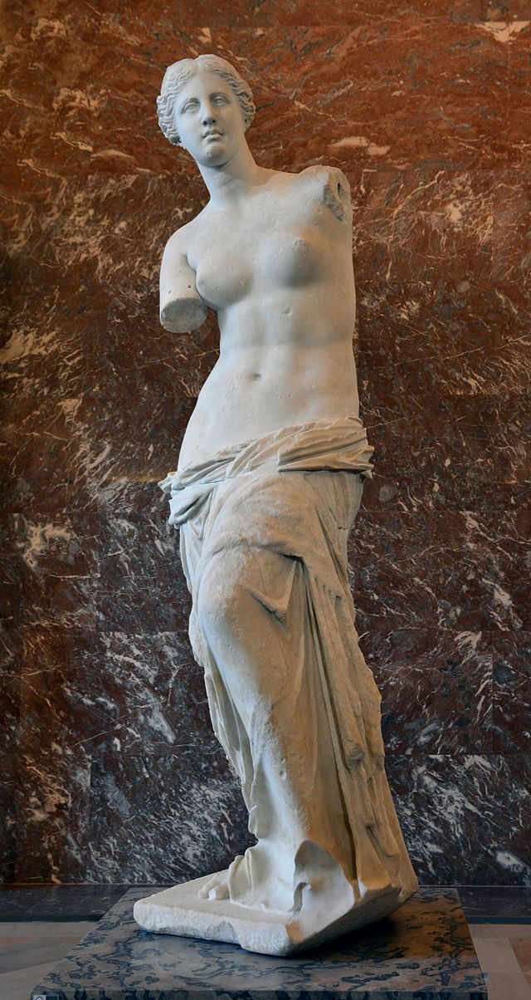

Venus de Milo

The Venus de Milo is an ancient Greek marble sculpture that has captivated
art enthusiasts and historians for centuries. Created around 100 BC, the
statue depicts the goddess Aphrodite (Venus in Roman mythology). Standing
at 6 feet 8 inches tall, it is renowned for its exquisite beauty and elegant
composition. One of the most striking features of the Venus de Milo is the
missing arms, which has fueled speculation and intrigue about its original
form and purpose. Today, the statue is displayed at the Louvre Museum in
Paris, where it continues to draw countless visitors who marvel at its
timeless grace and enigmatic allure. The Venus de Milo stands as a
testament to the artistic achievements of ancient Greece, representing
the idealized beauty and divine femininity revered in classical art.
Home Page